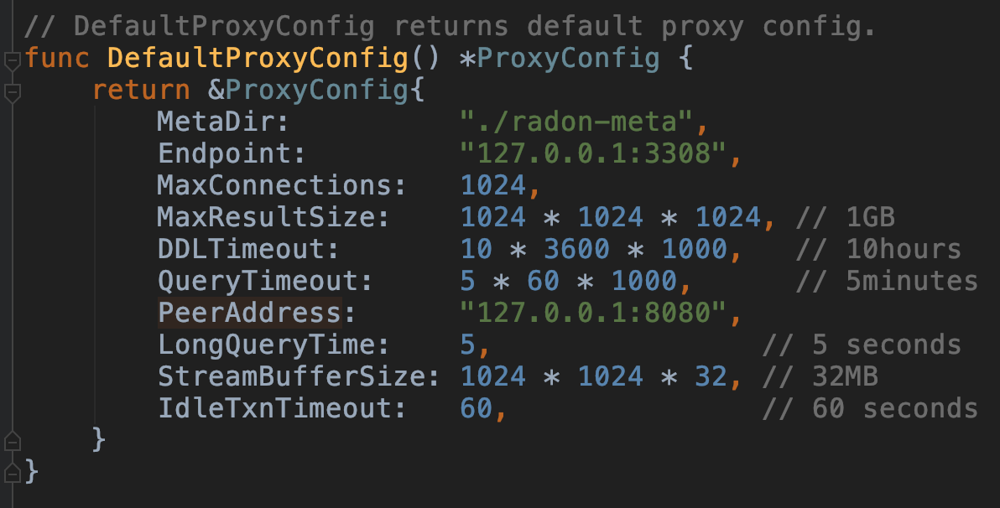
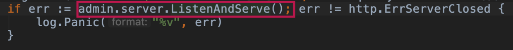
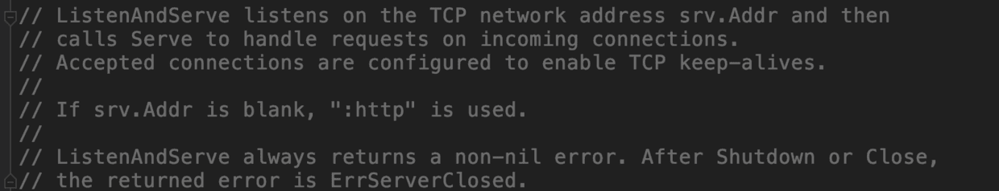

RadonDB是国内知名云服务提供商青云开源的一款产品，下面是一段来自官方的介绍：
QingCloud RadonDB 是基于 MySQL 研发的新一代分布式关系型数据库，可无限水平扩展，支持分布式事务，具备金融级数据强一致性，满足企业级核心数据库对大容量、高并发、高可靠及高可用的极致要求。
做DBA的都知道关系型数据库在分布式数据库方面堪称举步维艰，虽然很多高手或者公司都开源了自己的中间件，但是很少有公司像青云这样将自己商用的成套解决方案直接开源的。可能开源版本和商用版本之间有很多功能差异，不过从解决方案的完整性角度来看，RadonDB堪称是良心产品了。
而且RadonDB的还有一个明显的好处是用Go编写的，而且现在的代码量也不算大，对于一个学习Go语言的人来说这是一个极好的项目。另外还有一点，RadonDB模拟了完整的MySQL Server端，里面有一项核心的东西叫做SQL解析器和优化器的，刚好可以借此机会从源码角度学习一下其思想。要知道MySQL虽然开源，但是整个项目都是用C编写的，很难看懂。
我打算用闲暇时间好好学习一下RadonDB源码，当然我可能半途而废，所以，这一篇可能是开始也可能是结束。
这个文件在“radon/src/radon”目录下，代码只有区区82行，不过这是整个RadonDB的入口。
这段代码中利用了不少flag包用于接收参数，首先映入眼帘的是一堆import，此处就不加赘述了，因为毕竟只是引入了包，至于做什么的，代码写了就能知道。
接下来是包的初始化：
var (
flagConf string
)
func init() {
flag.StringVar(&flagConf, "c", "", "radon config file")
flag.StringVar(&flagConf, "config", "", "radon config file")
}flag是一个很好用的包，用于接收命令行参数，至于怎么用可以参考网上的资料。这个init()函数很有意思，这个函数会在很多书的“包初始化”一节来讲述，其实记住几个顺序就可以：
这是包的初始化顺序，那么回到radon.go，初始化顺序也是一目了然的。
init函数不能被引用
接下来是一个简单的usage函数：
func usage() {
fmt.Println("Usage: " + os.Args[0] + " [-c|--config] <radon-config-file>")
}仅仅是为了打印命令行的帮助，在引用的时候才有效，现在只是声明。
而后就是程序的主入口main函数了，这段函数的最开始就执行了这样一句：
runtime.GOMAXPROCS(runtime.NumCPU())声明了逻辑处理单元，数量和CPU核数相当，这一点在之前讲goroutine的笔记中讲述过。
紧接着，程序将获得一些关键的环境信息：
build := build.GetInfo()虽然只有一句，但是背后的东西还是很丰富的：
func GetInfo() Info {
return Info{
GoVersion: runtime.Version(),
Tag: "8.0.0-" + tag,
Time: time,
Git: git,
Platform: platform,
}
}这是一种典型的结构体的初始化方式，如果对结构体不熟悉，建议也是百度一下相关资料。
这些打印出信息的东西无非就是一些显示输出，跟我们平时启动Spring的时候打印那个炫酷的SPRING banner没什么区别，接来下才是处理一些要紧的东西，比如处理配置：
// config
flag.Usage = func() { usage() }
flag.Parse()
if flagConf == "" {
usage()
os.Exit(0)
}
conf, err := config.LoadConfig(flagConf)
if err != nil {
log.Panic("radon.load.config.error[%v]", err)
}
log.SetLevel(conf.Log.Level)其中的flag.Usage是函数变量，函数变量是一个新颖的概念，举一个例子说明：
func square(n int) int { return n*n }
f := square
//打印9
fmt.Println(f(3))flag包中的Usage本身就是个函数变量。
上面这段业务代码主要做了这么几件事情：
我们先不说紧接着要启动的Monitor了，这是一个性能指标监控，并不在我的学习范围内。
// Proxy.
proxy := proxy.NewProxy(log, flagConf, build.Tag, conf)
proxy.Start()代理是每个人写程序都挺喜欢写的名字。proxy是一个自行编写的包，我们来看看NewProxy的时候做了什么：
func NewProxy(log *xlog.Log, path string, serverVersion string, conf *config.Config) *Proxy {
audit := audit.NewAudit(log, conf.Audit)
router := router.NewRouter(log, conf.Proxy.MetaDir, conf.Router)
scatter := backend.NewScatter(log, conf.Proxy.MetaDir)
syncer := syncer.NewSyncer(log, conf.Proxy.MetaDir, conf.Proxy.PeerAddress, router, scatter)
plugins := plugins.NewPlugin(log, conf, router, scatter)
return &Proxy{
log: log,
conf: conf,
confPath: path,
audit: audit,
router: router,
scatter: scatter,
syncer: syncer,
plugins: plugins,
sessions: NewSessions(log),
iptable: NewIPTable(log, conf.Proxy),
throttle: xbase.NewThrottle(0),
serverVersion: serverVersion,
}
}这段代码倒是很简单，就是利用入参中的配置项，声明了一系列的变量，并将这些变量封装在一个结构体内，然后返回。至于这些变量都是干什么的，我下次再说，这次只跟踪主流程。
紧接着看看启动都做了什么：
// Start used to start the proxy.
func (p *Proxy) Start() {
log := p.log
conf := p.conf
audit := p.audit
iptable := p.iptable
syncer := p.syncer
router := p.router
scatter := p.scatter
plugins := p.plugins
sessions := p.sessions
endpoint := conf.Proxy.Endpoint
throttle := p.throttle
serverVersion := p.serverVersion
log.Info("proxy.config[%+v]...", conf.Proxy)
log.Info("log.config[%+v]...", conf.Log)
if err := audit.Init(); err != nil {
log.Panic("proxy.audit.init.panic:%+v", err)
}
// 省略了一大堆，为了节省篇幅
spanner := NewSpanner(log, conf, iptable, router, scatter, sessions, audit, throttle, plugins, serverVersion)
if err := spanner.Init(); err != nil {
log.Panic("proxy.spanner.init.panic:%+v", err)
}
svr, err := driver.NewListener(log, endpoint, spanner)
if err != nil {
log.Panic("proxy.start.error[%+v]", err)
}
p.spanner = spanner
p.listener = svr
log.Info("proxy.start[%v]...", endpoint)
go svr.Accept()
}这个Start函数看起来好像Java中的构造器，做的事情也和构造器有点相似，就是赋值，不过它还能做多的事情，比如说启动了一个监听：
svr, err := driver.NewListener(log, endpoint, spanner)有了监听之后，就可以启动一个goroutine了，而且是有条件的存活的：
go svr.Accept()这里的条件就是Accept要做什么：
Accept runs an accept loop until the listener is closed.
在listener关闭之前，Accept将始终运行一个循环，也就是说这个goroutine会一直生存下去。
到这一步proxy就算启动起来了，然后就会去启动Admin了：
// Admin portal.
admin := ctl.NewAdmin(log, proxy)
admin.Start()按照惯例看看NewAdmin在干什么：
// NewAdmin creates the new admin.
func NewAdmin(log *xlog.Log, proxy *proxy.Proxy) *Admin {
return &Admin{
log: log,
proxy: proxy,
}
}代码逻辑很简单，就是返回一个Admin结构体的指针。而Admin结构体是这样的：
// Admin tuple.
type Admin struct {
log *xlog.Log
proxy *proxy.Proxy
server *http.Server
}看，之前的代码里没有对server进行赋值，这是为什么？答案在Start函数里：
// Start starts http server.
func (admin *Admin) Start() {
api := rest.NewApi()
router, err := admin.NewRouter()
if err != nil {
panic(err)
}
api.SetApp(router)
handlers := api.MakeHandler()
admin.server = &http.Server{Addr: admin.proxy.PeerAddress(), Handler: handlers}
go func() {
log := admin.log
log.Info("http.server.start[%v]...", admin.proxy.PeerAddress())
if err := admin.server.ListenAndServe(); err != http.ErrServerClosed {
log.Panic("%v", err)
}
}()
}这里是一系列的Http操作，对server的赋值就在其中，此时会把默认IP，端口等等信息都写入到server中：

一看代码我就知道RadonDB要用3308端口进行连接，而起管理端口就注册在8080。
好了，这些都很容易明白，此时Start函数只需要启动一个goroutine就可以了。关键在这里：

看名字就知道这是干什么的，监听并维护一个服务，看看其注释：

那么这样一来，服务就启动起来了，当然后面还会有stop函数，就不再详解了。有意思的是，可以注意这几句：
// Handle SIGINT and SIGTERM.
ch := make(chan os.Signal)
signal.Notify(ch, syscall.SIGINT, syscall.SIGTERM)
log.Info("radon.signal:%+v", <-ch)这几句声明了一个通道，一个Signal类型的通道，可以用于接收系统调用，SIGINT一般是ctrl-c，SIGTERM一般是kill。在发生这两个系统调用后，系统开始关闭。
Go语言还是简单的，至少现在看来，这些代码我是都能看懂的，而我学习Go语言的时间也不过两周。
我希望能借着RadonDB的开源，学会关键的优化器和SQL解析器的思想。